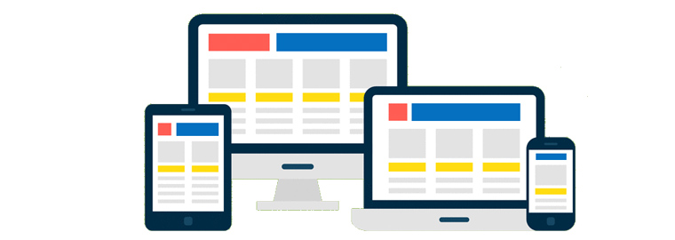

Section12: Typy układów
Początkowo strony internetowe miały stały układ. Jeśli pojemnik miał
szerokość 1200 pikseli, pozostawał szeroki na 1200 pikseli, bez
względu na to, na jakim ekranie go otworzysz, dużym czy małym. W
dzisiejszej różnorodności urządzeń mobilnych to podejście jest
przestarzałe.

Nowoczesna sieć internetowa przyjmuje nowe podejścia do tworzenia
witryn internetowych. Łączą one elementy układu płynnego z nowymi,
nowoczesnymi technikami, takimi jak adaptacyjny (adaptive) i
responsywny (responsive) układ. Techniki „adaptacyjnego” i
„responsywnego” układu różnią się ustawieniem szerokości kontenera i
zagnieżdżonych elementów.
Responsywna (responsive) strona internetowa - posiada
kilka opcji wyświetlania, przejścia między nimi są płynne, elementy
i pojemnik rozciągają się jak guma. Podczas zmiany rozmiaru rzutni
bloki płynnie się kurczą lub rozciągają, a gdy pojawia się punkt
przerwania, (breakpoint) - zmieniają swoje położenie tak, aby
optymalnie zajmować całą wolną przestrzeń poziomą.
Adaptacyjna (adaptive) strona internetowa - ma kilka
opcji wyświetlania, w przeciwieństwie do strony responsywnej -
dosłownie. Projekt zmienia się w szarpnięciach w sztywno określonych
punktach przerwania i nie rozciąga się między nimi.
Podczas składania zapytań o media należy skupić się na punktach
przerwania projektu, czyli wartościach szerokości rzutni, w których
projekt znacznie się zmienia. Możesz je zdefiniować zgodnie z
układem narysowanym przez projektanta.
/* Common container styles. */
.container {
min-width: 320px;
margin-left: auto;
margin-right: auto;
background-color: #ffc107;
/* Text styles */
text-align: center;
line-height: 180px;
font-size: 32px;
white-space: nowrap;
}
/* Set the maximum width of the responsive container. */
.container.responsive {
max-width: 1140px;
margin-bottom: 40px;
}
/* Set the base width of a adaptive container. */
.container.adaptive {
max-width: 400px;
}
@media screen and (min-width: 600px) {
.container {
background-color: #00bcd4;
}
/* Change the current width of the adaptive container at each breakpoint. */
.container.adaptive {
max-width: 600px;
}
}
@media screen and (min-width: 900px) {
.container {
background-color: #8bc34a;
}
/* Change the current width of the adaptive container at each breakpoint. */
.container.adaptive {
max-width: 900px;
}
}
@media screen and (min-width: 1140px) {
.container {
background-color: #ff5252;
}
/* Change the current width of the adaptive container at each breakpoint. */
.container.adaptive {
max-width: 1140px;
}
}
.container .label {
margin-top: 0;
}
Dla obu kontenerów ustawiana jest właściwość min-width - szerokość
rzutni, poniżej której projekt nie jest obsługiwany. Użytkownik z
węższym ekranem będzie miał poziomy pasek przewijania.
.container {
min-width: 320px;
}
Kontener responsywny jest ustawiany raz na właściwość max-width w
stylach podstawowych, tak aby rozciągał się dowolnie, ale
maksymalnie nie był szerszy niż określona wartość.
.container.responsive {
max-width: 1140px;
}
Kontener adaptacyjny otrzymuje początkową wartość maksymalnej
szerokości, po czym jest ponownie definiowany w każdym punkcie
przerwania.
/* Ustawiamy szerokość podstawową adaptacyjnego kontenera */
.container.adaptive {
max-width: 320px;
}
@media screen and (min-width: 600px) {
.container.adaptive {
max-width: 600px;
}
}
@media screen and (min-width: 900px) {
.container.adaptive {
max-width: 900px;
}
}
@media screen and (min-width: 1140px) {
.container.adaptive {
max-width: 1140px;
}
}
Które podejście należy zastosować? Wszystko zależy od projektu,
rodzaju strony internetowej i możliwości finansowych klienta. W
przypadku większości witryn dla małych i średnich przedsiębiorstw
wersja adaptacyjna jest wystarczająca. Układ responsywny jest
droższy w projektowaniu i rozwoju, ponieważ jego wykonanie jest
trudniejsze i dłuższe, ale to jest niezastąpione w interfejsach
nowoczesnych aplikacji internetowych. Czasami zadania biznesowe
można lepiej wykonać za pomocą oddzielnej wersji telefonu
komórkowego lub nawet natywnej aplikacji zamiast strony
internetowej.